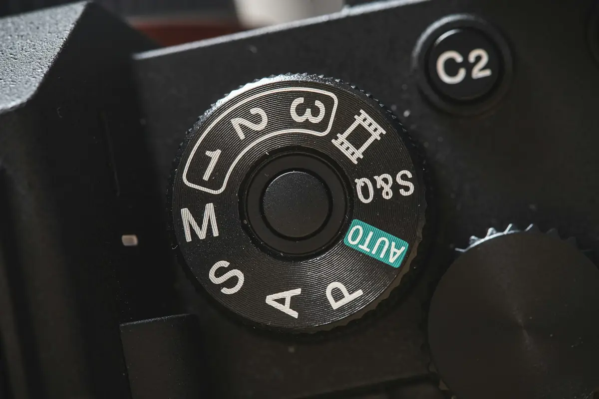

現在地: 買ったけど使えてない
カメラのオートモードから抜け出せない初心者は、まずPモードから
オートから抜け出せないなら、最初の一歩はPモードです。ISO感度はオートにしておき、自分で触るのは露出補正だけにします。
範囲は2つに絞ります。明るさが思い通りにならないならPと露出補正、背景をぼかしたいならA(キヤノンではAv)。
この記事で分かること
私はカメラを持たずに調べる側です。この記事は、キヤノン・ニコン・ソニー・パナソニック・OM SYSTEMの説明書と入門ページを読み比べて書きました。実機で試した話はありません。ダイヤルを回すのが怖い人は、先に戻り方から読んでも大丈夫です。
最初の1回の手順
順番は私の整理で、メーカーが決めたものではありません。
- モードダイヤルをPにする(ダイヤルがない機種は、説明書の撮影モードのページで)。画面のISO表示がAUTOかも見る(違えば説明書で変え方を確認)
- 説明書の索引で露出補正を引き、操作する場所を確認する
- 画面の大部分が白っぽいもの(白い壁や紙など)を、補正0と+1で1枚ずつ撮って並べる
- 補正を0に戻す
ここから下は、この手順の理由と、うまくいかないときの話です。
オートばかりで抜け出せないのはなぜ?

Q&Aサイトに、ミラーレス(レンズを交換できるカメラの一種)でショーを撮っている人の相談がありました。オートを卒業してうまく撮りたいが、どう勉強すればいいか、という内容です(Yahoo!知恵袋の相談)。回答は、AとSの特徴を知る、3つの数字の関係を覚えてとにかく撮る、などに分かれていました。答えが1つに決まらないから、どこから手を付けていいか分からなくなるんですよね。操作が合わなくて、カメラ自体を使わなくなった人の声は一眼レフを買ったけど後悔…にあります。暗い場所で動くものを撮る悩みは、暗いところで撮れない…の記事のほうが近いです。
抜け出した人が、抜け出す前の気持ちを振り返った文章もあります。取材で撮影もするライターの人のブログです。
まず、フルオートの場合は完全にカメラ任せになってしまうため、写真の露出がおかしくても、調整の仕方がわからないのです。
露出は、センサー(光を受け止める板)にどれだけ光を入れるか、ということです。全自動では、その調整をどこでやるのかが見えません。これが、抜け出せない理由のいちばん手前にあるものだと思います。だから、調整の入口が1つだけ開くモードから始めます。
全自動とPモードは何が違う?
この節は、モードダイヤルのAUTOやA+のような全自動と、Pモードの違いの話です。まず、モードごとに何をカメラが決め、何を自分で決めるのかを表にしました。
全自動は、絞り(レンズの中の光の通り道)もシャッタースピード(センサーに光を当てる時間)もカメラが決めます。キヤノンのEOS R50では、A+はカメラがシーンを解析して設定を自動で行うモードです(R50のA+のページ)。名前は、確認した機種ではメーカーごとに違います。キヤノンはA+、ソニーはおまかせオート、パナソニックはiA、OM SYSTEMはAUTO、ニコンはオートです。共通するのは、失敗を防ぐ代わりに、自分で変えられる設定が限られることです。
［おまかせオート］の場合、多くの機能が自動設定となり、自分で変更できません。
ただ、何が変えられないかは機種ごとに違います。α6400のおまかせオートでは露出補正ができません(α6400の露出補正のページ)。一方、ニコンのZ30のオートでは露出補正ができ、電源を切ると解除されます(Z30の露出補正のページ)。図の全自動の段を、機種による、としたのはこのためです。
Pモードは、絞りとシャッタースピードをカメラが決めるところまでは全自動と同じです。違うのは、それ以外を自分で変えられること。OM SYSTEMのFAQには、E-P7のPモードについてこうあります。
必要に応じて、露出補正やホワイトバランス、連写など、詳細な撮影設定の変更もできます。
ホワイトバランスは色合いの調整のことです。キヤノンのR50でも、Pで自動で決まるのはシャッタースピードと絞りだけです。AFエリアや測光モードなどは自由に設定できます(R50のPモードのページ)。撮影モードの用語集にも書いたとおり、Pは全自動と同じものではありません。プログラムオート、キヤノンではプログラムAEとも呼びますが、どれも同じPのことです。
もう1つ、Pは何でも自動、というわけでもありません。暗すぎたり明るすぎたりして適正な明るさにできないときは、数値が点滅して知らせます(パナソニックのS9では赤く点滅、S9のプログラムAEのページ)。R50のPのページには対処もあります。暗すぎるときはISO感度(受けた光の信号を強める設定)を上げるかストロボを使う。明るすぎるときはISO感度を下げるか、光を減らすNDフィルターを使う、です(R50のPモードのページ)。
オート卒業の最初の1つにPを選んだ理由(メーカーの勧め方は分かれている)
正直に言うと、メーカーのサイトを読み比べても、答えは1つにそろっていませんでした。確認したものを表にします。
| メーカーのサイト | 勧め方 | 文脈 |
|---|---|---|
| パナソニック UP LIFE | まずP、表現力を付けたいならA | サイト上の写真家の執筆記事 |
| キヤノン 野鳥の撮りかた3 | P、ISO感度はAUTO | 野鳥撮影の入門講座 |
| OM SYSTEM FAQ | AUTOなどで慣れたら、Pなどを試す | E-P7のQ&A |
| キヤノン ペット写真の記事 | Av(絞り優先) | ゆっくり動く・止まった場面から |
| ソニー αcafe | レッスン1がA。露出補正はA・S・P共通 | 順番の明示なし |
| ニコン Lesson2 | シーンとモードの対応に決まりはない | 入門の順番は示していない |
オートの次にPを挙げていたページは3つです。ただし、パナソニックのはサイト上の写真家の執筆記事で、OM SYSTEMは慣れたらPなどを試す、という書き方でした。
結論から言うと、まずは「Pモード」がおすすめです。
まずは簡単な設定「P（プログラムAE）」でシャッターを押してみましょう。
野鳥という文脈ですが、この講座はISO感度をAUTOにして準備完了、としています。一方で、キヤノンのペット写真の記事はAvから、ソニーのαcafeはAのレッスンから始まります。ニコンは、シーンごとの決まりはない、という立場で、入門の順番は示していません。
撮影モードはそれぞれに違った特徴があり、「このシーンにはこのモード」という決まりはありません。
キヤノンの用語集も、Pを持ち上げてはいません。プログラムAEの項目は、知識がなくてもきれいに撮れる便利なモード、としています。そのうえで、意図的な作品撮りにはシャッター優先AE・絞り優先AE・Mが向くと添えています(用語集のプログラムAE)。絞り優先AEの項目には、Pで撮って背景が思い通りにならなかった作例もあります。
写真2はプログラムAEで撮影したことで、絞り値がF14まで自動的に絞られてしまい、背景がうるさくなってしまいました。
だから、メーカーはPを勧めている、とは書けません。それでもこの記事がPを最初の1つにしたのは、全自動で見えなかった明るさの調整を、操作1つで体験できるからです。絞りもシャッタースピードもカメラ任せのまま、露出補正だけを動かせます。Aでも同じことはできますが、F値という2つ目の決めごとが先に来ます。暗いところで撮れない…の記事で示したP等とISOオートの組み合わせとも矛盾しません。全自動でも明るさを変えられる機種なら、Pで新しく増えるのは、ISOオートの上限感度などを見直せることです。設定できる機種とモードは限られます。
抜け出した人の順番も1つだけ。出張撮影のフォトグラファーの人は、自分はスポーツモードからAv、Mと進んだと振り返っています。それでも、これから始める人にはオートの次にPを勧めていました(noteの記事。出張撮影の案内もあるnoteです)。1人の例です。
Pモードで最初に触るのは露出補正だけ(電源を切っても残るので注意)
冒頭の相談に答えた回答者の一人は、オートがAUTOのことかA・Sも含むのか、と問いかけたうえで、こう書いていました。
カメラに任せられるところは任せてしまう方が良いと、私は思っています。
この回答者はAとSの理解を勧め、ショーならS中心とも助言しています。それでも、全部を自分で決めなくていい、という考え方は同じです。Pにして露出補正だけ触る、という順番はメーカーが明記したものではなく、私の整理です。根拠は2つ。ソニーのαcafeが、露出補正をA・S・P共通の機能として練習するよう勧めていること(αcafeのレッスン12)。OM SYSTEMのFAQが、Pで変えられる設定の先頭に露出補正を挙げていたことです。
露出補正は、カメラ任せの明るさに、もう少し明るく、もう少し暗く、と注文をつける機能です。ニコンのZ30では、明るくしたいときは+側、暗くしたいときは−側です(Z30の露出補正のページ)。後から写真を加工するのとは違い、撮影のときに明るさそのものを変えます。Pで補正を動かすと、カメラが絞りとシャッタースピードの組み合わせ(ISOオートならISO感度も)を変えて、明るさを合わせ直します。画面の大部分が白っぽいときは暗く写りやすいので+側、黒っぽいときは明るく写りやすいので−側が基本です。手順の3で白っぽいものを撮るのはこのためです。向きの例外や、Mモードなどで効かない場面は一眼の写真が暗い・白っぽい…にまとめました。補正の幅と刻み、操作する場所(ボタン・ダイヤル・メニュー)は機種で違うので、説明書の索引で引いてください。
ブログで振り返っていたライターの人は、妹の助言でPに移り、露出補正を知ったときのことをこう振り返っています。
初めて「露出補正」をしたときの感動は今でも覚えています。
参考の1人の例です。この人はISO感度も自分で上げていたので、ISOはオートのままという、この記事の順番とは違います。
Pには、明るさを変えずに絞りとシャッタースピードの組み合わせだけを変える、プログラムシフトという操作もあります(R50のPモードのページ)。最初は触らなくてよいと思います。
ここで1つ、落とし穴があります。露出補正は、電源を切っても残る機種があることです。
設定した露出補正値は、電源を切っても記憶しています。
S9は初期設定でこの動きで、電源を切ったらリセットする設定もあります。キヤノンのR50も、補正量は電源を切っても記憶されます(R50の露出補正のページ)。ニコンのZ30も、オート以外のモードでは解除されません。+に動かしたまま忘れると、次に撮るときも明るめのままです。使い終わったら補正を0に戻す、までを1セットにしてください。確認したのはこの3機種なので、ほかの機種は自分の説明書で確かめてください。
背景をぼかしたいなら絞り優先(A/Av)という分かれ道
この節は、Pの次ではなく、Pと並ぶもう1つの入口の話です。背景をぼかしたい、と目的がはっきりしているなら、最初からA(キヤノンではAv)を選ぶのも妥当だと思います。上の表で、ソニーのαcafeのレッスン1がAなのは、ぼけ味のレッスンだからです(αcafeのレッスン1)。
Aは、絞り(F値)を自分で決め、シャッタースピードはカメラが決めるモードです。F値はレンズの光の通り道の広さを表す数字で、小さいほど穴が大きく開きます。ソニーのα6400では、絞り値を小さくすると被写体の前後がぼけます(α6400の絞り優先のページ)。キヤノンのR50も、絞り数値を小さくするとピントの合う範囲が狭くなる、という説明です(R50のAvモードのページ)。ただし、ボケの大きさはF値だけで決まりません。望遠にする、被写体に近づく、背景を遠くする、でも大きくなります。
気をつけたいのは、AでF値を小さくしても、写真が明るくなるわけではないことです。カメラがシャッタースピードを変えて、明るさをそろえるからです。
Aを選ぶ場合も、ISO感度はオートにしておくのが安全だと私は思います。ISOを固定のままだと、暗い場所ではカメラがシャッタースピードを遅くして補うので、ブレやすくなります。R50では、Avでシャッタースピードの30"が点滅したら露出不足(明るさが足りない)です(R50のAvモードのページ)。ISOオートなら、低速限界まで来るとカメラがISO感度を上げて補います(上限感度まで)。この動きは暗いところで撮れない…の記事に図があります。
S(キヤノンではTv)はシャッタースピードを自分で決めるモードで、適正な明るさにならないことがあります。Mは絞りもシャッタースピードも自分で決め、明るさも自分で合わせます。どちらも、PかAで露出補正に慣れてからで遅くないと思います。
迷ったときの戻り方
最後に安全網です。モードを変えて設定が分からなくなったときの戻り方を、手軽な順に並べました。順番は私の整理で、メーカーの推奨ではありません。
1つ目は、露出補正を0に戻すことです。Z30の説明書では、補正量を0.0にすると解除されます(Z30の露出補正のページ)。
2つ目は、モードダイヤルを全自動に戻すことです。戻せば基本的にはいつもの撮り方に戻りますが、残る設定があるかは機種によります。ダイヤルの形が違う機種や、ない機種は、説明書でモードの切り替え方を確認してください。
3つ目は、それでも変なら、カメラの設定のリセットです。名前も範囲も機種ごとに違います。ソニーのα6400では、［設定リセット］の中に2つの項目があります。主な撮影モードの設定だけを初期値に戻す［撮影設定リセット］と、すべての設定を初期化する［初期化］です(α6400の設定リセットのページ)。OM SYSTEMのOM-5は、撮影の基本機能だけを戻す標準と、日時や言語などを除く全部を戻すフルの2つです(OM SYSTEMのFAQ)。ほかの機種にも似た項目があります。範囲の狭いほうから試す、というのも私の整理です。
リセットすると写真まで消えるのでは、と心配になると思います。
［設定リセット］を実行しても、画像は削除されません。
ただし、画像が消えないと明記されているのを確認できたのは、このα6400の範囲だけです。同じページには、設定リセット中はバッテリーを抜かないように、という注意もあります。ほかの機種は、自分の説明書でリセットの項目を読んでから実行してください。また、範囲の広い初期化は、自分で入れた設定も消えます。ニコンのZ30では、初期化した設定は元に戻せない、と注意されています(Z30のカメラの初期化のページ)。
メモリーカードのフォーマット(初期化と表示される機種もあります)は、カメラの設定ではなく、カードの中の写真が消える別の操作です。設定を戻したいときに、カードのフォーマットを選ばないでください。この記事で初期化と書いているのは、すべてカメラの設定の話です。
全部を自分で決めなくていい
冒頭の回答者は、こうも書いていました。
思い通りの露出設定にならないときに、どう修正すれば良いかだけ理解していれば、最小限の手間で済みます。
全自動で困っていないなら、無理に変えなくていいと思います。困ったときの入口がPで、直す手段が露出補正。それだけ知っていれば、ダイヤルを回すのは少し気が楽になると思います。
次に読むなら
この記事で読んだ25件
- Yahoo!知恵袋「カメラ初心者です オートモードを卒業して、もっとうまく綺麗に撮ってみたいの…」(質問者の相談と回答者の助言、2025年)
- コメモ。「オートでばかり撮っていたデジタル一眼初心者が、いかにしてマニュアルモードで撮るに至ったか。」(抜け出した人のブログ、2014年)
- note「【一眼レフ初心者さんへ】オート卒業!私がたどった"モードの順番"と、今マニュアルで撮る理由」(出張撮影のフォトグラファーの振り返り、2025年。出張撮影の案内もあるnote)
- キヤノン 製品マニュアル「EOS R50｜A+：全自動撮影（シーンインテリジェントオート）」(取扱説明書)
- キヤノン 製品マニュアル「EOS R50｜P：プログラムAE撮影」(取扱説明書)
- キヤノン 製品マニュアル「EOS R50｜Av：絞り優先AE」(取扱説明書)
- キヤノン 製品マニュアル「EOS R50｜自分の好みに露出を補正する」(取扱説明書)
- キヤノン バードブランチプロジェクト「超初心者はPモードでたくさん撮りましょう：野鳥の撮りかた3」(メーカー公式、野鳥撮影の入門講座)
- キヤノン「【初心者向け】一眼を使ったペット写真の撮影テクニック」(メーカー公式)
- キヤノン 写真用語集「プログラムAE」(メーカー公式)
- キヤノン 写真用語集「絞り優先AE」(メーカー公式)
- ソニー α6400 ヘルプガイド「おまかせオート」(取扱説明書)
- ソニー α6400 ヘルプガイド「絞り優先」(取扱説明書)
- ソニー α6400 ヘルプガイド「露出補正」(取扱説明書)
- ソニー α6400 ヘルプガイド「設定リセット」(取扱説明書)
- ソニー αcafe「レッスン1 ぼけ味をコントロールしよう」(メーカー公式)
- ソニー αcafe「レッスン12 被写体を適正な明るさで撮影したい」(メーカー公式)
- ニコン「Lesson2：シーンに合わせて撮影モードを選ぶ」(メーカー公式)
- ニコン Z30 活用ガイド「E（露出補正）ボタン」(取扱説明書)
- ニコン Z30 活用ガイド「カメラの初期化」(取扱説明書)
- パナソニック UP LIFE「おさえておきたいカメラの基礎知識」(パナソニックのサイト上の記事。監修・写真・ライター: 大貝篤史)
- パナソニック LUMIX S9 取扱説明書「プログラムAEモード」(取扱説明書)
- パナソニック LUMIX S9 取扱説明書「露出補正」(取扱説明書)
- OM SYSTEM Q&A「[007014]撮影モード「AUTO」と「P(プログラム撮影)」の違いを教えてください。(E-P7)」(メーカー公式FAQ)
- OM SYSTEM Q&A「[007187]カメラの各種設定を初期設定に戻す方法を教えてください。(リセット・OM-5)」(メーカー公式FAQ)
引用は2026-10-02時点で各ページを閲覧して確認しました。